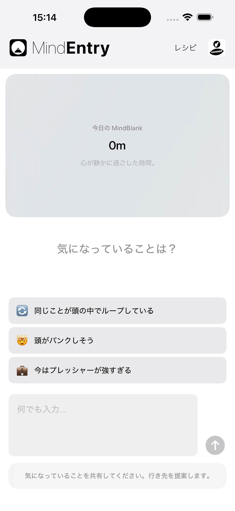
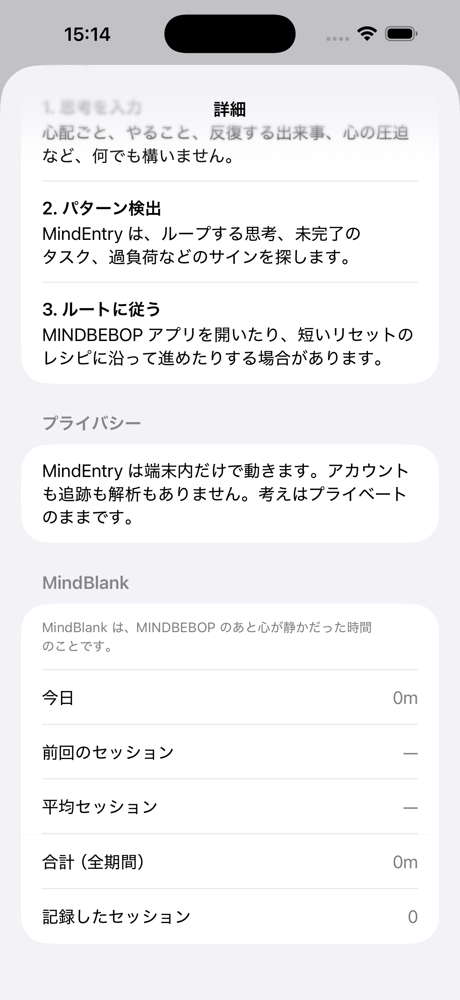

頭の中が静かだった時間。
MindBlankはスコアではありません。
MINDBEBOPでの働きかけが完了したあと、未解決の思考ループから心がどれだけ自由でいられたかを静かに映し出すシグナルです。
アプリをどれだけ使ったかではなく、次のメンタルリセットを必要としなかった時間をMINDBEBOPは映し出します。
MINDBEBOPは、メンタル・バックグラウンド層を構造化するためのモジュラーアーキテクチャを導入し、未処理の思考によって静かに奪われていた注意力を取り戻す手助けをします。
多くのアプリは利用時間を測ります。 MindBlankが映し出すのは、「使わずにいられた時間」です。
その静かな時間がMindBlankです。
心が静かだった時間を、そっと映し出します。
MindBlankにはアンケートも、評価も、自己採点も必要ありません。
MINDBEBOPでの働きかけが完了したあと、しばらく別のメンタルリセットを必要としなかった時間を、MindBlankは静かに映し出します。
質問はありません。 判断もしません。 解釈もしません。
MindFlipOutでFlipを完了します。
次にMINDBEBOPのツールが必要になるまで、2時間が経過しました。
MindBlankの表示：2時間の静かな時間
静けさは、必ずしも解決を意味するわけではありません。 思考は、準備ができたときに後から戻ってくることがあります。
MindBlankは、ただ静かな時間を映し出します。 それは、未解決のループがあなたの注意を求めていなかった時間です。
MindBlankは、 MINDBEBOP Mental Background OS の入口である MindEntry に組み込まれています。
将来的には、 MindEntryBiz において、組織全体の集計指標として表示される可能性もあります。


MindBlank は MindEntry の中に表示されます。
MindBlankは達成度を示すものではありません。
次のメンタルリセットが必要になるまで、心がどれだけ静かでいられたかに気づくためのものです。
Copyright © 2026 MINDBEBOP — All rights reserved.